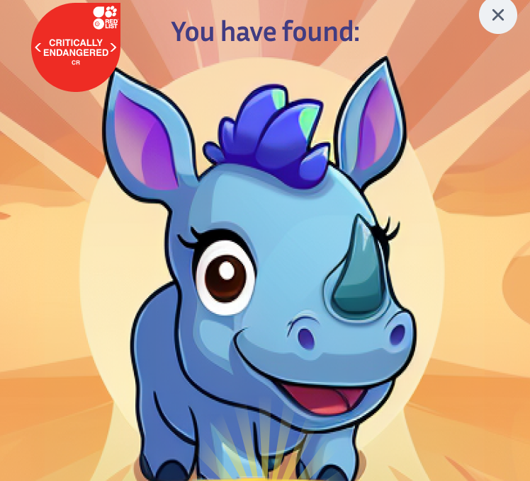
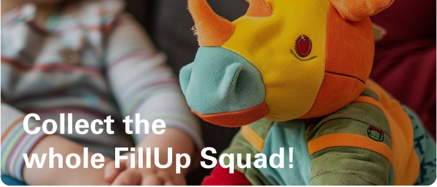

GasCo · Gamification pitch concept
Fill Up Squad
Turning petrol stops into opportunities to discover, collect and earn rewards.


Overview
Together with another designer, I developed a gamification concept connecting visits to GasCo petrol stations with its mobile app. I created the visual designs and explored generative AI for character artwork, backgrounds and plush reward concepts. The proposal formed part of a successful pitch.
Client presented as GasCo for confidentiality.
Giving station visitors a reason to open the app
The brief called for a gamification concept that could encourage people to engage with the mobile app while visiting physical petrol stations. We explored how the stops along a journey could become part of a collection experience that continued across locations.
Discover an animal. Grow your collection.
We proposed placing QR codes at different locations within participating stations around South Africa. Scanning a code would reveal an animal to collect in a digital passport and award points towards a reward.
The collection focused on threatened animals found in South Africa. Each discovery was an opportunity to introduce an animal, explain its conservation status and invite people to support conservation—bringing a learning element to the journey.
- 1DiscoverFind and scan a QR code at a station.
- 2CollectReveal an animal and add its stamp to the passport.
- 3ProgressBuild the collection and accumulate points across visits.
- 4RedeemUse points towards a reward, such as a plush animal.
Why it was designed this way
The passport made progress visible, while undiscovered animals suggested what remained to collect. Plush animals gave the collection a tangible reward. We also considered practical alternatives, such as refreshments or fuel discounts, for people motivated by everyday value. These reward options remained exploratory at pitch stage.
Learning about threatened wildlife and drawing attention to conservation were design intentions too. All of these were proposed engagement mechanisms, rather than validated behavioural outcomes.
The proposed experience


Connecting the collection to the journey
The wider proposal included route planning to surface petrol stations and rest stops along a journey, destination celebrations, and opportunities to donate to conservation organisations.
Organisations and donation amounts shown in the mockups are illustrative pitch content, not confirmed partnerships or final commercial terms.

Using generative AI to make the idea tangible
Alongside designing the interface, I explored how generative AI could accelerate asset development for the pitch. I used it to develop animal artwork, backgrounds and visualisations of potential plush rewards.
The process involved iterating on prompts, selecting and editing outputs, and combining them with other design elements to achieve the visual style I wanted.


A successful pitch
The team won the pitch. The production app subsequently took a different direction, so Fill Up Squad remained a pitch concept.
The work demonstrates my contribution to collaborative concept development, visual design and AI-assisted asset creation, making a proposed gamification experience tangible for the pitch.
Reward economics, QR placement, redemption logistics and detailed game rules would have needed further development and validation before implementation.